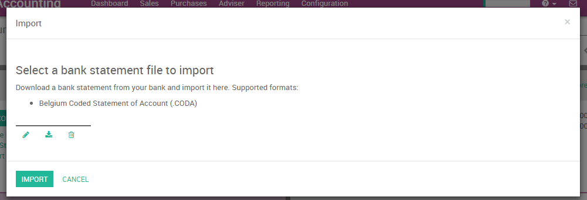

CODA 是比利时银行对账单文件格式。多数比利时银行，以及 Isabel 软件，允许下载你所有银行对账单 CODA 文件。
对于YuanCloud, 你可以从你的银行或者会计软件下载CODA文件并直接导入YuanCloud。这将创建所有银行对账单。
小技巧
现在测试功能 CODA 示例文件
配置
安装 CODA 功能
如果您已经安装了YuanCloud提供的比利时科目表，CODA 导入功能会默认安装。在这种情况下，您可以直接转到下一章 导入你的第一个 coda 文件<InstallCoda_>
如果CODA没激活，你首先激活它。在会计应用中，去菜单 [UNKNOWN NODE problematic]. 在会计设置中，检查选项 以 .CODA 格式导入银行对账单 并应用。
导入你的CODA文件
一旦你已经安装了此功能，你可以设置你的银行账户允许导入银行对账单文件。 要做到这一点, 去会计 仪表板, 并在银行账户卡上点击按钮**更多** 。然后, 点击 导入对账单 来加载你的第一个 CODA 文件。

在下面界面中加载 CODA 文件并点击**导入** 来创建你的说要银行对账单。
如果成功加载该文件，你会被重定向到银行核对屏幕，所有的交易会被重新核对。
导入 CODA 文件
在导入了你的第一个文件后，这个YuanCloud会计仪表板会自动建议你为你的银行导入更多的文件。为了下一次导入，你不需要再去点击 * 更多 * 按钮，你可以直接在链接上点击 导入声明。

每次你得到一个新客户/供应商的对账单,YuanCloud将要求您选择正确的单据去核销。从此项操作信息,将使YuanCloud自动完成下一个付款或自动关联。这将加快核销进程。
注解
YuanCloud能够自动检测是否某些文件或交易已经导入。所以,你不需要担心如何避免重复导入相同的文件:YuanCloud将在创建新的银行对账单之前检查一切。